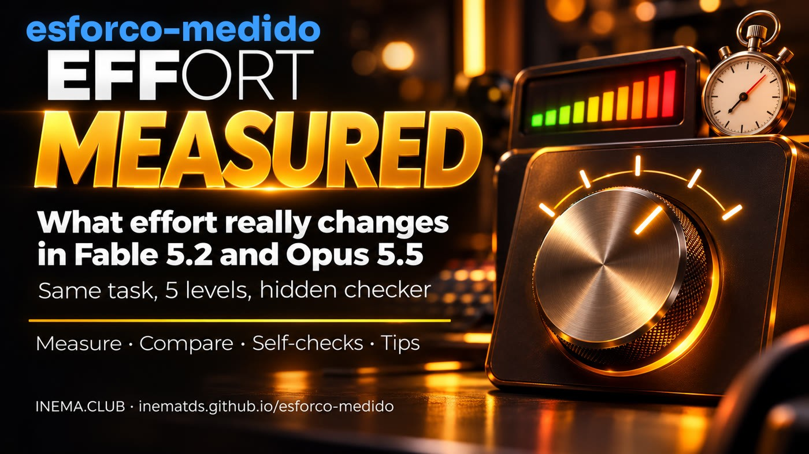

I measured 30 runs: across all 3 tasks, minimum effort got everything right, just like maximum effort, which on Fable cost about 14× more. Effort changes how much the AI thinks and checks, and one model’s “high” isn’t the same as another’s.

Claude users choose an effort level (from low to max) thinking that more effort means the AI works longer and gets more right. That’s not quite how it works. Effort changes how much the model thinks and how many times it acts and checks its own work; time and cost follow from that. This free kit shows it with numbers: run the same task at every level in Fable 5.2 and Opus 5.5, count what the model did, and score the result with a checker it can’t see. It also includes 14 sourced tips. No setup is needed to read it; to measure, you need Python 3 and Claude Code.
Anthropic’s documentation says the level “changes how the model thinks and how many tool calls it makes.” A tool call is each time the AI opens a file, edits it, runs a test, or searches. The time a task takes is a consequence, not the setting.
At a high level, the reasoning behind each step goes deeper. In Fable 5.2, starting at high, it even thinks before replying “hi.”
More tool calls: opens more files, runs more tests, checks what it did. At a low level, it combines steps and checks less.
At low levels, the model tends to stop early, listing what’s left or offering to continue. Then you come back and ask for the rest.
What effort barely changes: response length. For a short or long answer, say so in your prompt. Source: Anthropic API migration guide (Fable 5.2 and Opus 5.5), read on 11/12/2026.
The five levels follow the same order, but the reasoning behind each one varies by model. Comparing “Fable high” with “Opus high” as if they were equal is misleading.
| Claude Fable 5.2 | Claude Opus 5.5 | |
|---|---|---|
| API default (when no one specifies a level) | high | medium |
| Where to start, according to Anthropic | high (where most of the gains happen) | medium, and test the levels above and below |
| What’s surprising | low came close to Fable 5.1 at higher levels | medium beat Opus 5’s high; low came close in coding |
| xhigh and max | xhigh: slightly higher scores, many more tokens; max: the ceiling, rarely needed | only where you’ve measured gains; at xhigh/max, it thinks more per turn than Opus 5 |
| Common pitfall | “think less” in the prompt doesn’t work at medium or above: lower the level | if you copied the Opus 5 level, you’re running a different level than you think |
| API price (per million tokens, input/output) | US$ 8 / US$ 40 | US$ 4 / US$ 20 |
In Claude Code, check the session level with /effort status and change it with /effort <level>; the new level takes effect with the next message. Ultracode isn’t a level: it’s a setting that assembles a team of agents using the session’s current effort level.
3 coding tasks (easy, bug hunt, and a calendar with moving holidays), each at 5 levels in both models: 30 runs, clean copy, hidden checker. Measured on 11/12/2026, one run per combination.
runs with a perfect score: from low to max, in both models, all got everything right.
the cost of Fable 5.2 at max compared with low (US$ 9.78 vs US$ 0.72), and about 25× the time (26 min vs 1 min).
more thinking in Fable max than low (132 thousand vs 1 thousand tokens). That’s what effort buys.
swipe the table sideways →
| Total across 3 tasks | Score | Time | Thinking (tokens) | Tools | Checks | Equivalent cost* |
|---|---|---|---|---|---|---|
| Fable 5.2 · low | 48/48 | 1 min 05 s | 1,015 | 16 | 3 | US$ 0.72 |
| Fable 5.2 · medium | 48/48 | 1 min 26 s | 1,646 | 12 | 4 | US$ 0.83 |
| Fable 5.2 · high | 48/48 | 1 min 53 s | 3,174 | 23 | 7 | US$ 1.05 |
| Fable 5.2 · xhigh | 48/48 | 5 min 03 s | 18,580 | 33 | 10 | US$ 2.21 |
| Fable 5.2 · max | 48/48 | 26 min 42 s | 132,112 | 56 | 25 | US$ 9.78 |
| Opus 5.5 · low | 48/48 | 1 min 04 s | 253 | 11 | 5 | US$ 0.30 |
| Opus 5.5 · medium | 48/48 | 1 min 29 s | 760 | 13 | 4 | US$ 0.39 |
| Opus 5.5 · high | 48/48 | 1 min 58 s | 2,036 | 12 | 4 | US$ 0.48 |
| Opus 5.5 · xhigh | 48/48 | 3 min 35 s | 7,472 | 26 | 10 | US$ 0.79 |
| Opus 5.5 · max | 48/48 | 18 min 06 s | 92,889 | 48 | 16 | US$ 3.77 |
Thinking increased at every step in both models. Checks (running code to verify) grew a little from low to high (Fable 3 → 7, Opus barely changed, 5 → 4) and jumped at xhigh and max (Fable 25, Opus 16): at those levels, the model writes test scripts, looks for edge cases, and checks again.
The score. These short, clearly described tasks were already solved at the lowest level. Opus 5.5 at low got everything right at the lowest cost (US$ 0.30), about 32× less than Fable 5.2 at max.
* Cost calculated by Claude Code from the API price table (summed before rounding); with a subscription, you pay from your usage limit, so ~14× and ~32× are equivalent cost ratios, not changes to your limit. Thinking = reasoning tokens counted in each run’s log (the number in parentheses in RESULTADO.md). Read carefully: these are short tasks, one run each. They don’t show where high effort helps: according to Anthropic, at low effort, long tasks tend to stop before they’re finished, and open-ended, difficult problems benefit from more effort. None of these runs stopped early or called a subagent. Full records: exemplos/.
Repetition (noise): Fable 5.2 on the carrinho (shopping cart) task, low and high three times each → all 12/12; low 26–33 s, high 39–49 s, and high always thought more (more reasoning tokens). The number of tools varied from 3 to 12 across identical runs: compare reasoning and time, not an isolated tool count.
Start with the level Anthropic recommends and step down as long as the score holds. In the 3 short tasks in this kit, Opus 5.5 was cheaper than Fable 5.2 at every level, with the same top score.
drag the table sideways →
| Situation | Start with | Source |
|---|---|---|
| Short, clearly described code, like the tasks in this kit | Opus 5.5 · low (check the result) | Measured here: 30 out of 30 with a top score |
| General use with Opus | Opus 5.5 · medium, and test the neighboring levels | Anthropic guide |
| General use with Fable | Fable 5.2 · high | Anthropic guide |
| Interactive coding, chat, and everyday use with Fable | Fable 5.2 · medium, if quality holds | Anthropic guide |
| Quick tasks and subagents with Fable | Fable 5.2 · low | Anthropic guide |
| Measure the model's upper limit | max, only if time and tokens don't matter | Anthropic guide |
| Average equivalent cost* per run | low | medium | high | xhigh | max |
|---|---|---|---|---|---|
| Fable 5.2 | US$0.24 | US$0.27 | US$0.35 | US$0.74 | US$3.26 |
| Opus 5.5 | US$0.10 | US$0.13 | US$0.16 | US$0.26 | US$1.26 |
* Average across the 3 tasks (calendar, cart, intervals), one run per combination, 11/12/2026. With a subscription, you pay against a usage limit, not in dollars. The biggest gap between max and low was on the calendar task: Opus cost 17.6× more at max (US$1.58 vs. US$0.09). Long or open-ended tasks may need more effort: measure yours with ./medir.sh. Full page: dicas/QUAL-USAR.md (in Portuguese).
Every tip includes its source. The full list, with details, is in dicas/DICAS.md (in Portuguese).
/effort status.ultracode setting leaves the level alone; the --effort ultracode flag turns it on and also sets xhigh.The technical section starts here: install, run the measurement tool, and create your own task. You don’t need this part to understand what came before.
Three parts: the meter, the run reader, and tasks with a hidden checker.
Runs the task for each model × effort level, each run in a clean copy and a temporary HOME: the model can’t read your CLAUDE.md, hooks, plugins, skills, or MCP. Uses your subscription (removes ANTHROPIC_API_KEY from the environment).
Reads each run’s log and counts tools by type, checks (code run to verify), edits, rereads, subagents, thinking tokens, time, equivalent cost, and whether the ending offers to continue.
3 tasks with a hidden checker: intervalos (easy), carrinho (6 hidden bugs), and calendario (5 functions with moving holidays). The AI sees only a few tests; the score comes from many.
Each row in the final table is one run like this.
No API: everything runs through your subscription.
Standard library only.
python3 --versionWith Fable 5.2 and Opus 5.5 available on your subscription.
claude --versionEach run uses your subscription limit. Max takes longer and uses more: start with 2 or 3 levels.
# start small ./medir.sh carrinho -m opus -e low,medium
Actual commands from the repository.
Clone it and run the tests (no network required).
git clone https://github.com/inematds/esforco-medido.git cd esforco-medido python3 -m unittest discover tests # 18 tests OK
Two quick runs to see it work.
./medir.sh carrinho -m opus -e low,medium
Fable and Opus, low → max (10 runs). Use -r 3 to repeat each one before drawing a conclusion.
./medir.sh calendario # default: -m fable,opus -e low,medium,high,xhigh,max ./medir.sh calendario -m fable -e low,high -r 3
Hidden score, tools, checks, edits, time, tokens, and equivalent cost for each run. ⚠ marks a run where Claude Code used a different model.
cat resultados/calendario-*/RESULTADO.md
Choose the lowest level that gets it right. If the model stops before finishing, paste Anthropic’s block into CLAUDE.md.
# in Claude Code /effort medium # "finish the work" block printf '\n# Finish the work\n' >> CLAUDE.md && cat dicas/terminar-o-trabalho.en.txt >> CLAUDE.md
The same counts from a Claude Code session that’s already been recorded.
python3 relatorio.py sessao ~/.claude/projects/<project>/<session>.jsonl
tarefas/<name>/projeto/ (the code the AI receives), pedido.txt (the prompt), and oculto/checar.py <folder>, which prints NOTA n/total.
./medir.sh <name> -e low,high
It measures that task on that day. Repeat with -r 3 and use a task similar to your work.
The dollar amount in the table is what Claude Code calculates from the API price table. With a subscription, you pay from your usage limit.
Without the temporary HOME, your CLAUDE.md and hooks are loaded in every run and change the behavior. --sem-isolar measures your actual environment.
Login is stored in Keychain there: if the isolated run can’t find the credential, the script warns you and runs without isolation.
Related kit: effort right audits which model and effort level each part of your project uses and compares two levels on one of your tasks.